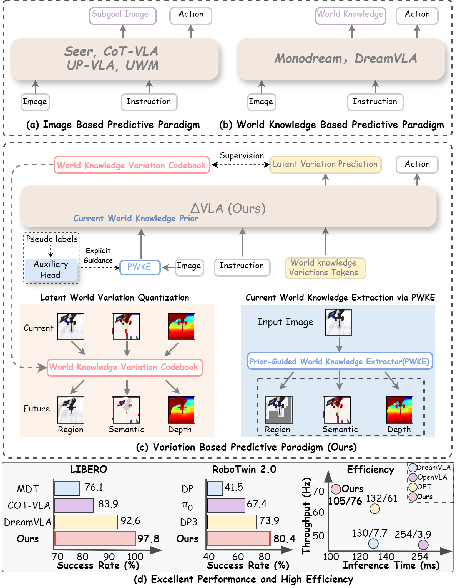
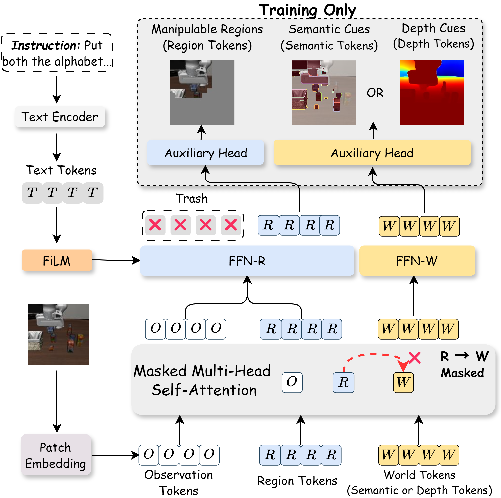
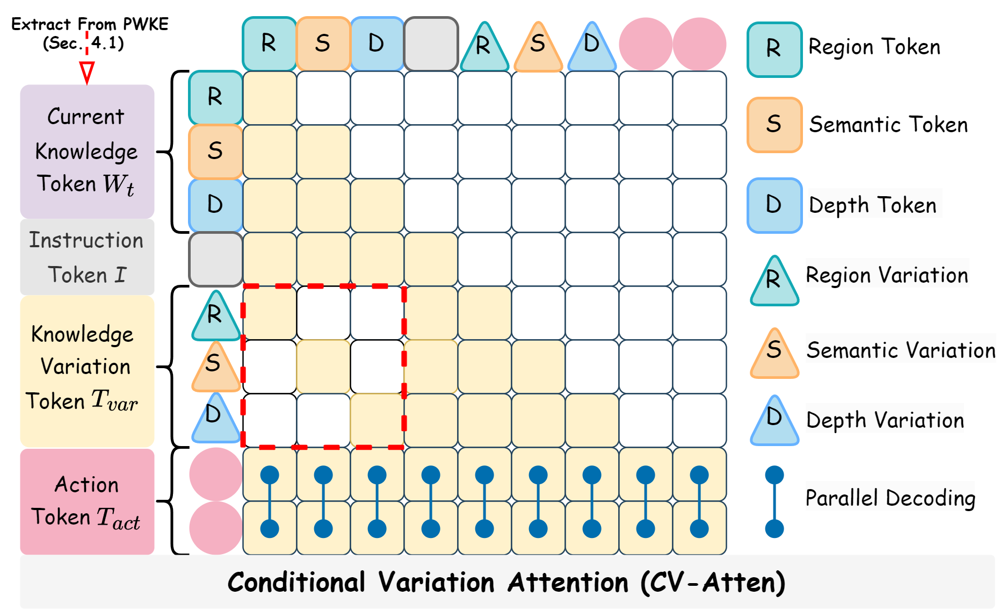
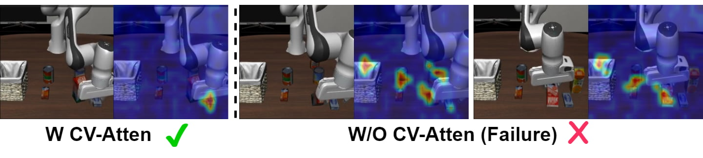
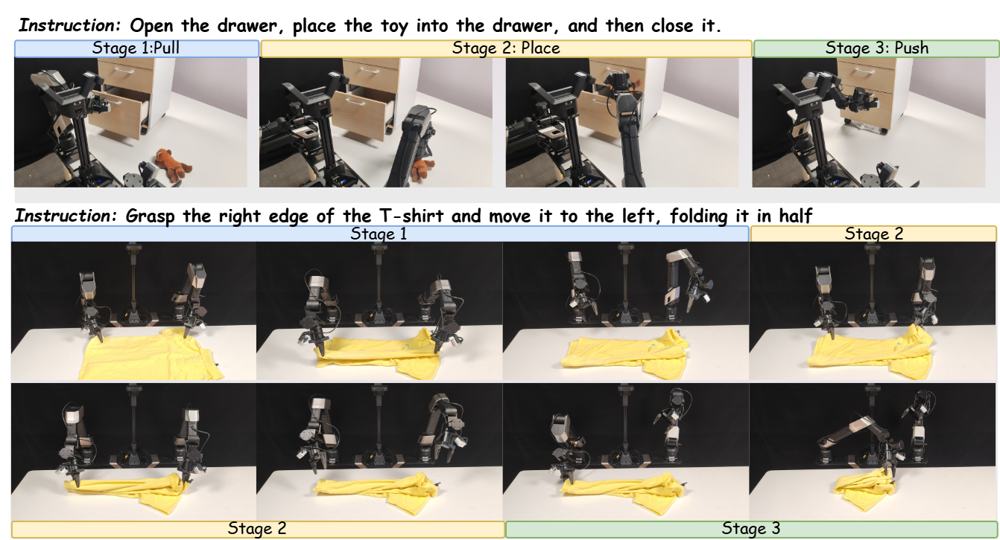
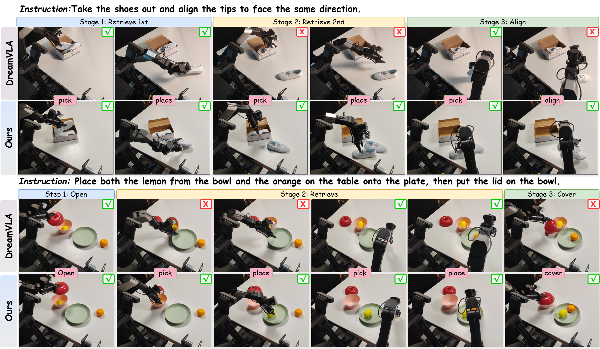

Summary of ΔVLA: Prior-Guided Vision-Language-Action Models via World Knowledge Variation
1. Overview
This paper addresses a critical limitation of existing Vision-Language-Action (VLA) models for robotic manipulation: state-of-the-art predictive VLA paradigms focus on forecasting absolute future visual or world states rather than reasoning about the action-induced change process that directly determines control quality. This leads to ungrounded, imagination-heavy predictions, redundant computation, and unstable conditioning for policy learning.
The key insight of the proposed ΔVLA framework is to model discrete world-knowledge variations relative to an explicit, grounded current-world knowledge prior, instead of regressing absolute future states. This design prioritizes reasoning about what should change vs. remain invariant under a given instruction, providing a stable, compact interface for action generation while reducing perceptual redundancy.

2. Key Contributions
- A novel prior-guided VLA framework (ΔVLA) that models discrete world-knowledge variations conditioned on an explicit current-world prior for action generation, aligning perception, change reasoning, and control.
- The Prior-Guided World Knowledge Extractor (PWKE): constructs a causal anchor of current world knowledge (manipulable regions, semantic cues, depth cues) using auxiliary heads and pseudo labels to filter redundant perceptual information.
- Latent World Variation Quantization (LWVQ): learns a discrete latent space via a VQ-VAE objective to encode world-knowledge variations, shifting prediction from high-dimensional full modalities to compact, stable latents for policy conditioning.
- Conditional Variation Attention (CV-Atten): a structured attention mechanism that restricts each variation token to attend only to its corresponding world-knowledge prior, reducing cross-modality interference and enabling disentangled variation learning.
- State-of-the-art performance on both simulated and real-world robotic manipulation benchmarks, paired with superior inference and training efficiency compared to existing baselines.
3. Method
The overall ΔVLA architecture is shown below:

"ΔVLA first extracts current world knowledge via the Prior-Guided World Knowledge Extractor, which encodes semantic, regional, and depth cues from SigLIP and DINOv2 guided by auxiliary heads and prior pseudo labels to form a unified world prior. These representations are concatenated with world variation tokens and modeled through the Conditional Variation Attention for structured perception–variation reasoning. Finally, the Latent World Variation Quantization module learns a discrete codebook representing world knowledge variations, providing causal guidance for variation token learning and consistent action generation."
3.1 Prior-Guided World Knowledge Extractor (PWKE)
PWKE leverages complementary strengths of pre-trained encoders: SigLIP for semantic understanding, DINOv2 for spatial geometry. It uses two sets of learnable tokens: region tokens (to localize manipulable regions) and world tokens (to extract semantic and depth cues).

A structured attention mask restricts region tokens from attending to world tokens to keep them focused on raw visual observations:
$$[\tilde{\mathit{O}}_t,\, \tilde{\mathbf{T}}_r,\, \tilde{\mathbf{T}}_w]
= \text{SelfAttn}\big([\mathit{O}_t, \mathbf{T}_r,\mathbf{T}_w],\, \mathbf{M}\big)$$
$$\mathbf{M}_{ij} =
\begin{cases}
-\infty, & i \in \mathcal{I}_r,\, j \in \mathcal{I}_w,\\
0, & \text{otherwise},
\end{cases}$$
Where $\mathcal{I}_r$ and $\mathcal{I}_w$ are index sets of region and world tokens, respectively.
FiLM modulation is used to align region extraction with the task instruction:
$$\begin{aligned}
f_{\text{R}}\!\big(\mathit{I}, [\tilde{\mathit{O}}_t, \tilde{\mathbf{T}}_r]\big)
&= \big(1 + \gamma(\mathit{I})\big) \odot [\tilde{\mathit{O}}_t, \tilde{\mathbf{T}}_r]
- \beta(\mathit{I}),\\
[\tilde{\mathit{O}}_t', \tilde{\mathbf{T}}_r']
&= \text{FFN-R}\!\big(f_{\text{R}}(\mathit{I}, [\tilde{\mathit{O}}_t, \tilde{\mathbf{T}}_r])\big),
\end{aligned}$$
Where $\gamma(\mathit{I})$ and $\beta(\mathit{I})$ are instruction-generated scale/shift vectors, $\odot$ denotes element-wise multiplication, and FFN-R is a region-specific feed-forward network.
Auxiliary training heads supervise token learning using pseudo labels: motion masks for manipulable regions, Depth-Anything v2 outputs for depth, and SAM features for semantics. These heads are discarded at inference, adding no overhead.
3.2 Latent World Variation Quantization (LWVQ)
LWVQ encodes continuous world knowledge variations into a discrete latent space via a VQ-VAE objective, avoiding the computational cost of full future modality prediction:
$${\mathit{W}}_{t+n} =
\text{Dec}\!\Big(
\mathit{W}_t,\,
\underbrace{\text{Quant}\big(\text{Enc}(\mathit{W}_t,\, \mathit{W}_{t+n})\big)}_{\Delta\mathit{W}_{t\rightarrow t+n}}
\Big)$$
Where $\text{Enc}$ and $\text{Dec}$ are the LWVQ encoder/decoder, $\text{Quant}$ maps continuous latents to the nearest entry in a learnable variation codebook, and $\Delta W_{t\rightarrow t+n}$ is the discrete world-knowledge variation between timestep $t$ and future timestep $t+n$.
3.3 Conditional Variation Attention (CV-Atten)
CV-Atten uses a structured masking strategy to reduce cross-modality leakage during variation reasoning, ensuring each variation token only attends to its corresponding world prior:

The unified reasoning pass through the LLM backbone is defined as:
$$[\tilde{\mathbf{T}}_{\textit{var}}',\, \mathit{A}_{t:t+n-1}] =
f_{\text{LLM}}\big([\mathit{W}_t,\, \mathit{I},\, \mathbf{T}_{\textit{var}},\, \mathbf{T}_{\textit{act}}], \mathbf{M}_{cv}\big)$$
Where $\mathbf{M}_{cv}$ is the CV-Atten mask, $\mathbf{T}_{var}$ are variation tokens, $\mathbf{T}_{act}$ are action tokens, and $\mathit{A}_{t:t+n-1}$ is the output $n$-step action sequence.
The total training loss combines action prediction, variation reconstruction, and prior extraction losses:
$$\mathcal{L} = \mathcal{L}_{\text{act}} + \lambda_{\text{var}}\mathcal{L}_{\text{var}} + \lambda_{\text{cur}}\mathcal{L}_{\text{cur}}$$
Where $\mathcal{L}_{act}$ is L1 loss for action regression, $\mathcal{L}_{var}$ and $\mathcal{L}_{cur}$ are MSE losses for variation and prior reconstruction respectively.
4. Experiments
4.1 Setup
The model is evaluated on two simulation benchmarks: 4 task suites of LIBERO, 8 tasks from RoboTwin 2.0, and 4 long-horizon real-world tasks on two robotic platforms (Galaxea R1 Lite, AgileX Cobot Magic). It is compared against 12 state-of-the-art VLA baselines including OpenVLA, $\pi_0$, DreamVLA, and CoT-VLA.
4.2 Quantitative Results
- Simulation: ΔVLA achieves 97.8% average success rate (SR) on LIBERO (1st rank, +0.7% over the next best baseline) and 80.4% average SR on RoboTwin 2.0 (+6.5% over the next best baseline).
- Real-world: ΔVLA achieves 72% average full-task SR on Galaxea R1 Lite and 69% on AgileX Cobot Magic, outperforming all baselines by 17-36% across tasks.
- Efficiency: ΔVLA reaches 0.105s inference latency, 76.2 Hz throughput, and 4.9h training time per 10k steps, outperforming all baselines on efficiency metrics while retaining top performance.
- Ablations: All components contribute to performance gains: PWKE improves long-horizon SR by 0.8%, LWVQ by 1.2%, and CV-Atten by 0.8% on the LIBERO Long suite.
4.3 Qualitative Results

The figure above visualizes PWKE outputs: manipulable regions, semantic masks, and depth maps aligned with task instructions.

The attention visualization confirms CV-Atten restricts cross-modality attention, with each variation token only attending to its corresponding prior.

The figure shows ΔVLA executing multi-step real-world tasks (drawer manipulation, shoe alignment, T-shirt folding, fruit placement).

The comparison shows ΔVLA outperforms baselines on all real-world task stages, with minimal error accumulation across long horizons.
5. Limitations & Future Work
- Limitations: The current variation codebook size is fixed, requiring manual tuning for different task sets. The method relies on external pre-trained models for pseudo label generation, introducing minor domain dependency.
- Future Work: Explore adaptive codebook sizing for varying task complexity, integrate self-supervised pseudo label generation to reduce external dependencies, and extend the framework to bimanual and mobile manipulation tasks with dynamic environments.